数据洞察视频并不是简单地给图表加动画，而是把数据发现、解释逻辑、视觉呈现和时间节奏组织成一个连续的理解过程。
视频可以按时间顺序逐步呈现关键变量、趋势变化和对比关系，降低观众在复杂图表中自行寻找重点的成本。
趋势、转折、异常和因果线索可以通过镜头、旁白和动画被连续展开，比单张静态图更接近真实汇报中的讲解方式。
面向业务汇报、数据新闻、科普和运营分析时，视频能把数据洞察转化为更容易分享、播放和复用的内容资产。
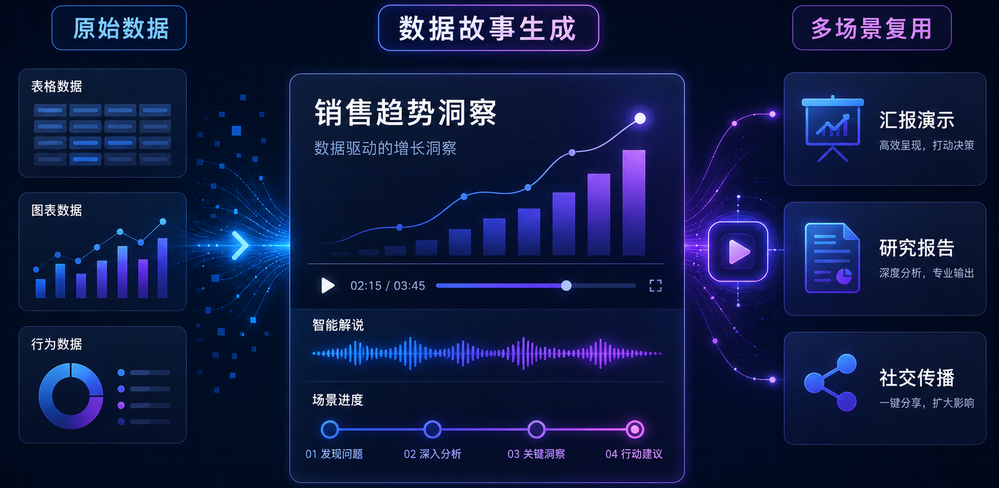
一个完整的数据视频需要同时处理数据分析、视觉编码、叙事结构、语音旁白、动画触发和时间同步；现有工具通常只能覆盖其中一段。
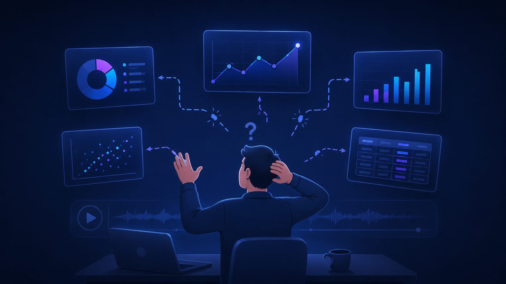
仪表盘可以展示图表，但不会自动组织成多场景故事，也无法和语音旁白精确同步。
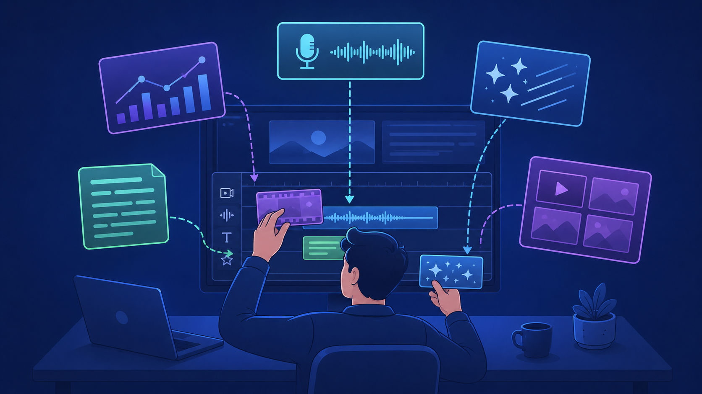
传统视频创作工具假设用户已经准备好图表、文案、镜头和动画。
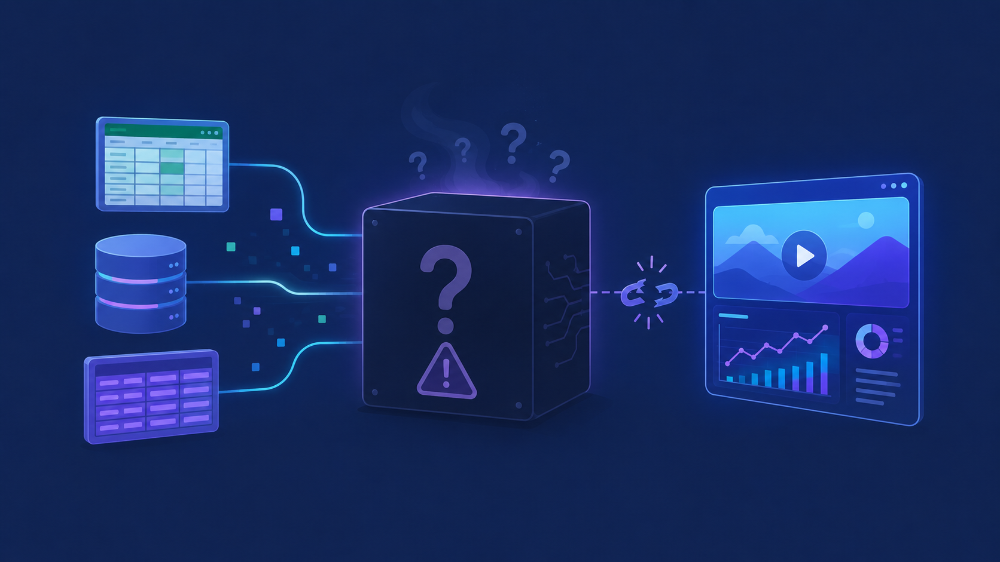
通用生成模型可能看起来流畅，但数字和图表元素很难追溯回原始数据字段。
数据洞察视频必须保证数字正确、图表可信、旁白同步和后续可修改。因此系统先从数据里找候选洞察，再组织场景顺序、图表表达、旁白和动画触发。
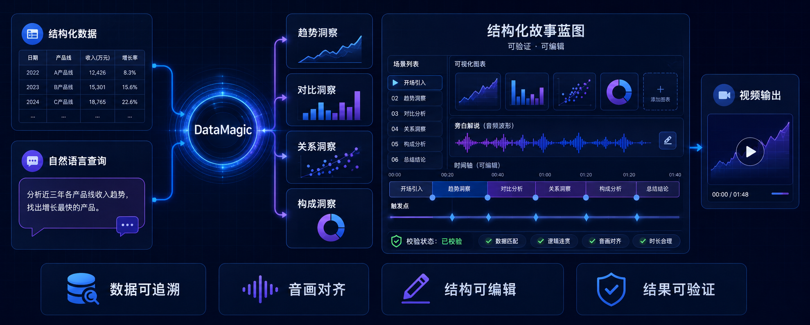
用户上传数据并输入自然语言目标后，系统生成场景、预览视频，并支持继续编辑局部内容。
DataMagic 把局部质量和全局连贯性拆开：先并行生成多个局部候选，再筛选、重排、生成旁白，并把动画与语音同步起来。
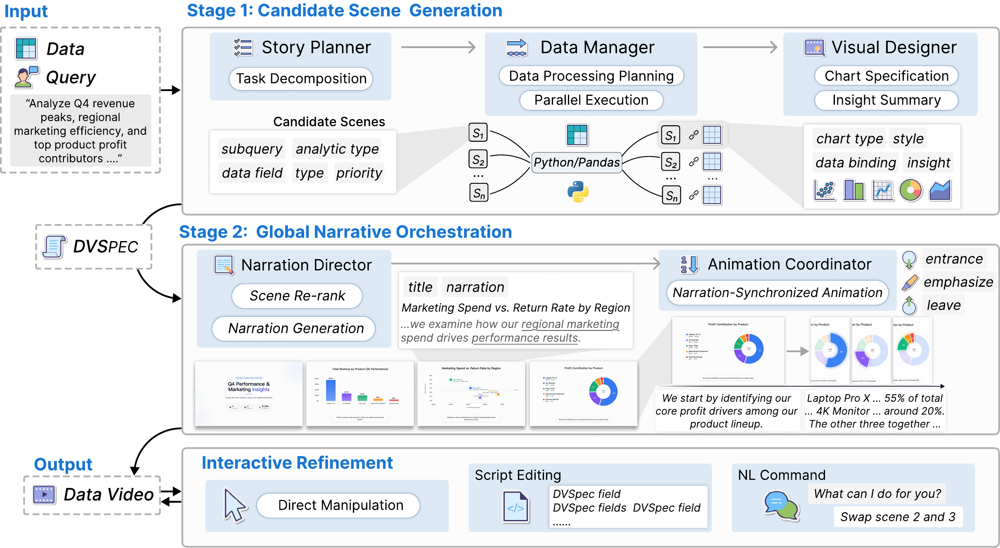
故事蓝图确定“讲什么”，风格模板决定“怎么讲”。用户可以从模板库里选择视觉方向，让开场、图表场景、指标卡、时间轴、叙事卡片和收尾页保持统一风格。
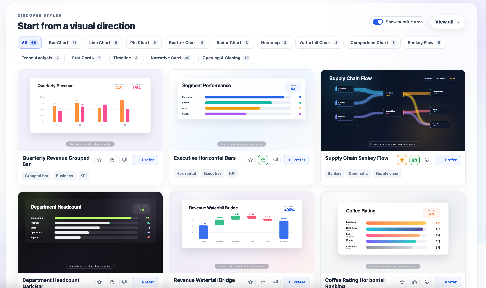
生成过程中，用户可以看到每个场景是否已经匹配视觉模板，并追踪场景时间轴、旁白和动画状态。
统一控制开场、图表场景、指标卡、叙事卡片和收尾页。
支持背景铺垫、关键数字强调、章节转场、洞察引用和总结页。
展示场景时间轴、模板匹配、旁白、动画和时间范围状态。
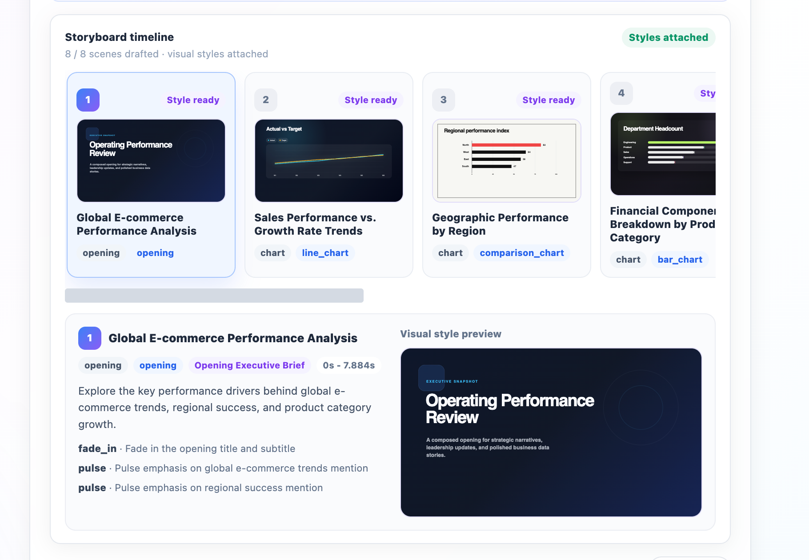
DVSpec 把多模态视频内容拆成可声明、可追溯、可增量修改的结构。图表元素通过数据绑定的语义引用指向原始数据，动画通过旁白索引触发器与语音段落同步。
{
"scene_id": "scene_04",
"visualization": {
"type": "bar",
"data": { "x": "product", "y": "growth_rate" }
},
"narration": "4K 显示器以 52.5% 增长率领先。",
"animation": {
"target": "4K Monitor",
"trigger": { "narration_index": 0 }
}
}
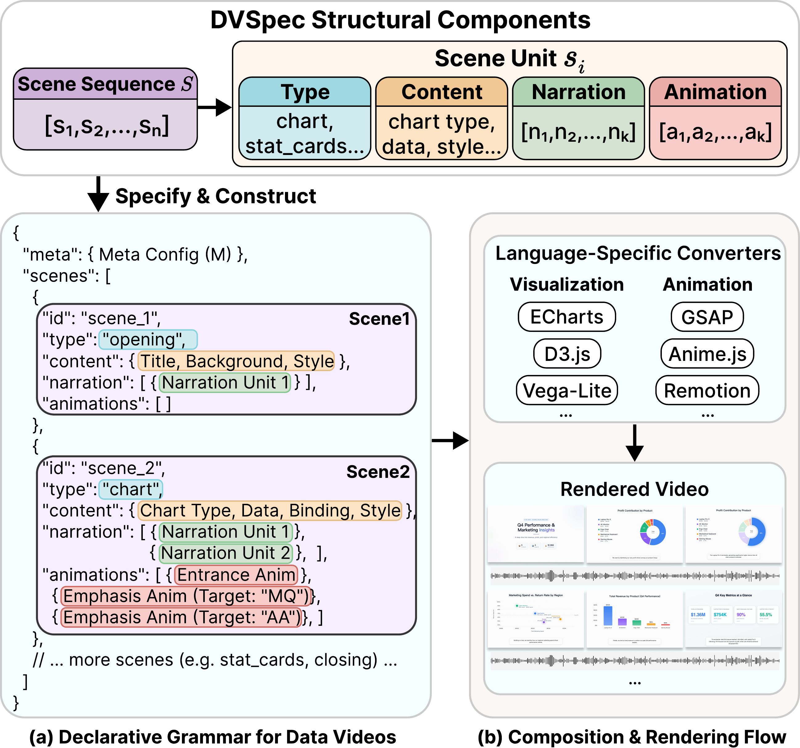
DataMagic 不把用户锁在一次性生成结果里。画布直接操作、声明式编辑、自然语言指令和基于数据溯源的问答都作用在同一份 DVSpec 上，因此可以局部修改、局部重渲染。
点击图表元素，调整图表类型、数据映射、颜色和高亮目标，系统实时映射为 DVSpec 更新。
直接编辑旁白和场景脚本；当 TTS 时长变化时，动画触发器会自动重新对齐。
用户可以对当前场景或全局视频追问，答案来自原始 CSV 和 DVSpec 中的数据溯源，而不是视觉猜测。
DataMagic 的网页工作台把上传历史、视频预览、场景时间轴、旁白编辑、画布操作和数据问答放在同一个工作流里。用户看到的是视频，系统内部维护的是同一份 DVSpec 状态。
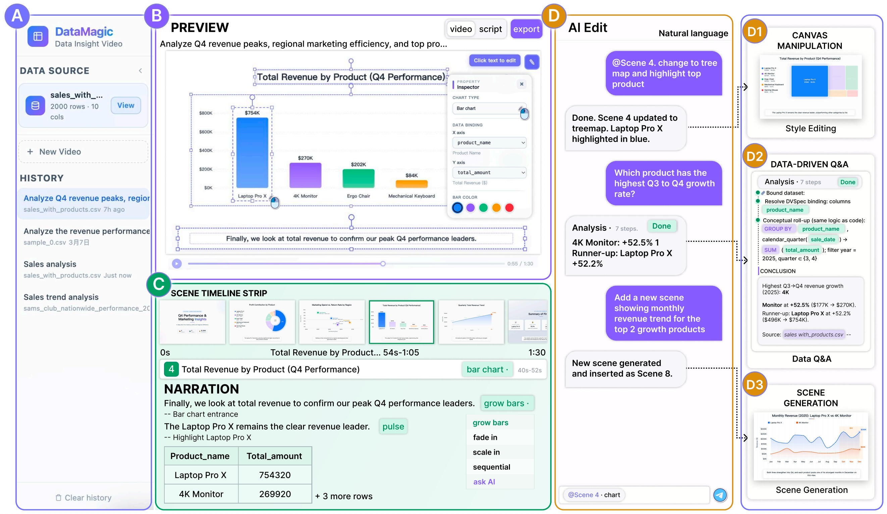
每个样例都是一个完整的数据洞察视频，适合在汇报中直接播放并说明生成效果。
Q4 Performance & Marketing Insights 从业务数据中生成多场景叙事，突出季度表现、区域营销效率和产品贡献。
赛力斯汽车用户洞察报告 从舆情和销售数据中生成多场景用户洞察视频，展示趋势分析、关键发现和叙事化总结。
量化评估覆盖意图满足、洞察质量、叙事质量、动画效果和视觉美观五个维度。自动评估与专家评分高度一致，说明该评估可以稳定反映生成视频质量。
DataMagic 的结构化生成机制让洞察、旁白、视觉编码和动画触发能够统一编排，因此不仅提升平均分，也显著减少生成失败和音画不同步问题。
用户实验使用论文中已经确定的最终图。DataMagic 相比对话式 LLM 工作流显著缩短任务完成时间，并降低 NASA-TLX 中多个维度的认知负担。
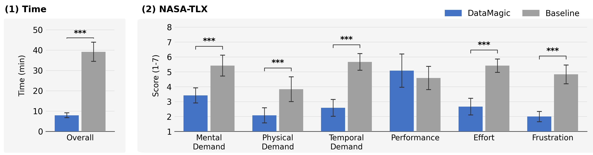
关键不只是自动生成，而是通过 DVSpec 让视频结果可验证、可追溯、可交互、可局部修改。这是数据洞察视频进入真实工作流所需要的系统能力。
所有视觉元素都可以追溯到原始数据，避免黑盒生成里的数字幻觉。
通过旁白索引触发器实现旁白与动画自动对齐。
用户可以持续编辑、追问和扩展视频，而不是重新生成整个结果。